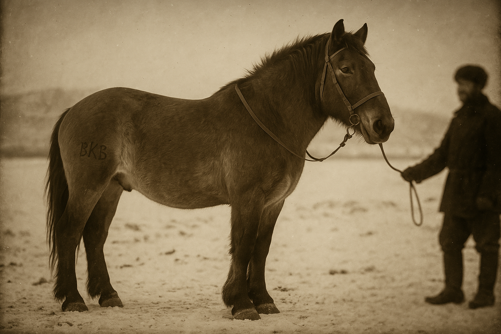
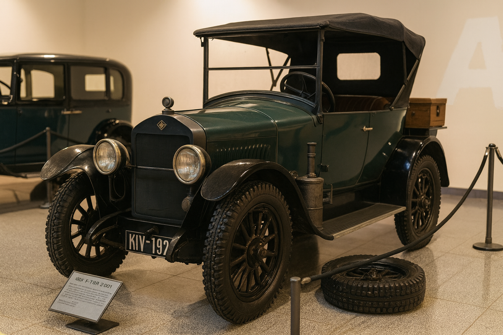

Кивишская империя
Кивишская империя — историческое государство в Восточной Сибири и на Дальнем Востоке, имперский период истории Кивиша с 1746 года по 13 июня 1923 года. Имперское название было принято Оримом Далерским после подавления восстания в Якутии. В XVIII веке государство расширило владения во Внутренней Азии и на американском берегу Тихого океана; в XIX веке основными направлениями его развития стали транспорт, техническое образование и механическое производство.
Особенностью империи было постепенное усиление специалистов, от работы которых зависели снабжение областей, содержание дорог и выполнение государственных заказов. Эта среда стала одной из опор преобразований Аколона Первого Технократа. В 1917 году монархическое управление прекратилось, однако прежнее государственное название сохранялось до провозглашения Союза Кивишских Республик. СКР унаследовал центральные учреждения и производственную основу имперского периода, приняв коммунистическую модель при сохранении независимости от СССР.
Этимология и самоназвание
Название «Кивишская империя» закрепилось в 1746 году после принятия Оримом Далерским императорского титула. Прежнее Кивишское царство продолжило существование под новым названием: государственная история страны восходила к 600 году, а Кора выполняла столичные функции с 714 года. Провозглашение империи обозначало изменение статуса верховной власти и её притязаний, а не основание страны заново.
В 1917–1923 годах название сохранялось при немонархическом переходном управлении. Поэтому окончание правления последнего монарха и завершение имперского периода относятся к разным датам. Новое самоназвание — «Союз Кивишских Республик» — было принято 13 июня 1923 года вместе с изменением политического и хозяйственного устройства.
География
Основное ядро государства находилось в Восточной Сибири и на Дальнем Востоке. Столицей была Кора на Ангаре; Мири, прежняя столица страны, сохранял значение внутреннего торгового и дорожного узла. Реки, сухопутные переходы и сезонные пути соединяли города с сельскими и северными областями. Удалённость поселений делала снабжение и поддержание сообщения постоянной задачей центральной власти.
Продвижение России на восток было остановлено Кивишем ещё до провозглашения империи. Сухопутная граница проходила приблизительно в районе современного Красноярска. Российско-кивишские отношения поэтому складывались вокруг пограничной торговли, доступа к маршрутам и военной безопасности. Северотихоокеанские экспедиции Кивиша опирались на собственные якутские и дальневосточные направления.
Территориальные приобретения XVIII века включали земли разгромленного в 1746 году Джунгарского ханства и поселения на американском берегу, возникшие с 1753 года. Джунгарское направление связывало империю с казахскими степями и китайскими землями. Управление завоёванными областями требовало гарнизонов и соглашений с местными влиятельными группами; один военный успех не обеспечивал постоянного сбора поступлений и безопасности караванов.
Североамериканское владение, последовательно называвшееся Лагиротой, Ольяскхей, Аляськой и Аляской, зависело от морского сообщения через северную часть Тихого океана. Его административное и хозяйственное освоение сосредоточивалось вокруг поселений и обслуживаемых маршрутов. В 1871 году Кивиш продал Аляску Соединённым Штатам.
История
Правление Орима Далерского (1742–1784; император с 1746 года)
Подавление восстания и провозглашение империи
Орим Далерский пришёл к власти в 1742 году. Ключевым событием начала его правления стало восстание в Якутии, масштаб которого оказался больше ожидаемого. Войска царства понесли тяжёлые потери; помощь Цин в обучении и организации военных действий способствовала подавлению выступления в 1746 году. Победа сохранила контроль центральной власти над важным северо-восточным направлением, но показала зависимость её возможностей от подготовки командиров и снабжения.
После подавления восстания Орим объявил о принятии императорского титула и переименовании государства. Новый статус представлялся как переход к следующему этапу развития страны после пережитого кризиса. При этом расходы на гарнизоны, доставку продовольствия и восстановление управления сохранялись. Для населения победа означала одновременно возвращение более устойчивого порядка и продолжение повинностей, связанных с содержанием войск.
Джунгарский поход и прекращение наступления на казахские земли
Уже после провозглашения империи началась война с Джунгарским ханством. В течение нескольких месяцев 1746 года ханство было разгромлено, а его земли присоединены к Кивишу. Быстрое расширение поставило перед правительством задачи, которые нельзя было решить завершением боёв: требовалось обеспечивать гарнизоны, договариваться с местными руководителями и поддерживать караванные пути.
В конце кампании войска двинулись к казахским землям. В 1747 году военачальница Насюка Арьто-Фа обратила внимание Орима на подготовку казахских воинов и возможности манёвренного боя в степи. Вместо продолжения наступления император предложил торговлю и обмен военными знаниями. Казахские жузы сохранили самостоятельность, а Кивиш получил возможность изучать военную школу соседей без дальнейшего расширения затратного похода.
Этот поворот имел последствия за пределами степного направления. Полученные знания позднее использовались при пересмотре тактики кивишских советников в войне Цин с Бирмой. Отказ от нового завоевания оказался не только дипломатическим решением, но и способом усилить подготовку собственной армии.
Дороги, фонари и производство Запита
В 1748 году маршруты Мири—Кора и далее к Пекину начали оборудовать дорожными ориентирами и фонарями. Освещение обслуживаемых участков облегчало подход к станциям и движение в тёмное время. Работа таких участков зависела от поставок топлива, ремонта светильников и труда обслуживающих людей; улучшение маршрута не устраняло сезонных трудностей на всём его протяжении.
Торговое сближение с казахами сопровождалось обменом дарами, в том числе мясной лепёшкой Хунцешон. Одновременно государство поддержало переход к масляным светильникам. В 1749 году появились уменьшенные фонари для повозок, карет и судов, что расширило спрос за пределы дорожных станций.
В 1750 году инженер Запит получил помещение и средства для производства светильников. Изделия стали отправлять купцам в Пекин. Производство сохраняло мануфактурный характер: его возможности определялись числом обученных мастеров, доступом к материалам и качеством ручной работы. Государственная поддержка помогала наладить выпуск, а продажа за границей требовала приемлемой цены и надёжности изделий.
Заказы на фонари связывали стекольщиков, кузнецов, перевозчиков и поставщиков масла. Для администрации становилось важно принимать не просто оговорённое количество изделий, а пригодный к использованию товар. Так складывался ранний опыт технической проверки государственных поставок, позднее получивший развитие в транспортных и механических службах.
Северотихоокеанские экспедиции
В 1752 году экспедиция, продвигавшаяся со стороны Якутии, достигла пролива, получившего кивишское название Ахунгит Афириш. В 1753 году путешественники пересекли его и основали первые поселения на американском берегу в области Лагирота. В 1755 году за расширявшимся владением закрепилось название Ольяскхя.
Существование поселений зависело от зимовок, сезонных рейсов и отношений с коренными жителями. Экспедиции давали сведения о берегах и маршрутах, но их нанесение на карту само по себе не обеспечивало постоянного управления. Содержание американского направления требовало отдельных людей, запасов и морских средств, которые нельзя было заменить материковыми гарнизонами.
Коневодство и помощь Цин в войне с Бирмой

В 1760 году Великое конюшенное ведомство, основанное в 1436 году, поставляло лошадей в Цин, российское пограничье, казахские земли и через Китай — в Чосон. Коневодство обслуживало военные, курьерские и торговые потребности. Экспорт приносил доход, однако требовал сохранять племенное поголовье и обеспечивать кормовую базу внутри страны.
В 1765 году Кивиш направил военную миссию для помощи Цин в войне с Бирмой. Первоначально её задачей была разработка тактики для союзной армии. Попытка перенести северные методы без достаточного учёта местных условий оказалась неудачной: наступление календарной зимы не означало привычных для кивишских командиров снега и мороза.
Недовольство действиями советников побудило Орима обратиться к Насюке Арьто-Фа. В 1766 году она занялась пересмотром предложенных решений, сочетая сведения о местности и снабжении с опытом, полученным от казахских военных. Изменения позволили добиться продвижения. В 1769 году Цин при кивишской поддержке одержала победу, понеся потери.
Помощь имела значение для отношений двух государств: Кивиш выступил в роли союзника, способного предоставить собственные знания после прежней китайской помощи в Якутии. Одновременно неудача первоначальных советников показала, что военный опыт сохранял ценность лишь при приспособлении к условиям конкретной кампании.
Российское направление и городские работы
В 1770 году Орим по приглашению Екатерины II прибыл в Санкт-Петербург для обсуждения отношений. Сближение открывало возможности торговли и обмена военным опытом, но требовало учитывать существующие китайские связи Кивиша и взаимное недоверие на сухопутной границе.
В 1771 году было согласовано расширение торговли и крайне ограниченное военное сотрудничество. Договорённости не означали полного военного союза: Кивиш сохранял самостоятельность решений и не передавал России руководство собственными силами. Такая осторожность позволяла развивать российское направление, не заменяя им отношения с Цин.
В середине 1770-х годов в Мири развернулись работы по каменному мощению улиц. В 1776 году выявились проблемы скольжения и скопления воды, после чего начали менять устройство мостовой и водоотвода. Городское строительство стало источником практического инженерного опыта: результат приходилось оценивать по работе в дождь, мороз и при повседневном движении.
Образовательные и хозяйственные программы развивались с перерывами. В 1777 году решение о подготовке специалистов было исполнено лишь частично; обучение отвлекало учеников от заработка, а мастерские — от текущих заказов. К рубежу 1770–1780-х годов власть ограничивала часть новых работ и проверяла расходы. Работники отложенных проектов теряли часть ожидаемого заработка. Северные исследования при этом продолжались, однако открытие нового маршрута не сопровождалось автоматическим присоединением всех обследованных земель.
Правление Терона Вассенхольма (1784–1821)
Избрание и сохранение государственных учреждений
После смерти Орима в 1784 году временное управление перешло к военным. В течение примерно месяца состоялось народное голосование, по итогам которого новым правителем стал Терон Вассенхольм. Избрание дало преемнику собственное основание для признания власти. Казначейство, военное командование и местная администрация продолжили работу после смены главы государства.
Участие населения в выборе правителя стало важным эпизодом политической истории империи. При этом избрание Терона не отменило монархическую форму управления: верховная власть по-прежнему сосредоточивалась у правителя, опиравшегося на центральные учреждения и командование.
Аляска и европейские контакты
Терон продолжил северотихоокеанские исследования и контакты с иностранными путешественниками. В середине 1780-х годов французские экспедиции получали сведения об американском владении от местных жителей, а затем посещали Кивиш. Названия Лагирота и Ольяскхя постепенно уступали местному варианту Аляська; при Тероне закрепилось наименование Аляска.
Контакты с французами сопровождались передачей географических сведений и снабжением путешественников. Терон также встречался с Екатериной II и поддерживал обмен с российскими картографами. В кивишских картах и переговорах употреблялось название Берегов пролив для северного морского прохода между азиатским и американским берегами.
Перестройка дорог и паровой проект
В 1790 году началась перестройка дороги Мири—Кора. Прежние указатели заменяли каменными, для дорожных работ наладили добычу камня в Якутии и наняли около тысячи человек. Расширение работ давало заработок и заказы перевозчикам, но одновременно увеличивало потребность в продовольствии, подводах и регулярных выплатах.
При Тероне дорожные заказы сочетались с продовольственными резервами, торговыми договорённостями и проверкой расходов. Местные советы получали больше возможностей обсуждать ремонт и повинности. Их интересы не всегда совпадали с задачами столицы: жители стремились улучшить собственные дороги, тогда как центральная власть распределяла средства между несколькими областями.
К началу XIX века относится паровой проект «Хиризора Циншео». В 1804 году в его рамках демонстрировалось движение опытного парового устройства; обсуждалось железнодорожное сотрудничество с Россией. Опыт показывал возможность нового вида тяги, но ещё не создавал действующей магистрали. Для регулярного движения требовались подготовленный путь, надёжные машины, ремонтная база и постоянный персонал.
Правление Фирима Стредова (1821–1867)
Техническое образование
В 1821 году власть перешла к Фириму Стредову. При нём обучение специалистов стало оформляться в постоянную государственную систему. Разрозненные мастерские могли передавать навыки ученикам, однако крупные транспортные проекты требовали сопоставимых требований к подготовке людей в разных местах.
В 1828 году началась подготовка сети технических училищ и учёта квалификаций, введённой в действие в 1833 году. Обучение связывали с практикой на государственных и частных работах. Подтверждённые навыки давали мастерам дополнительные возможности получить должность или заказ, уменьшая зависимость от происхождения и личного покровительства.
Расширение обучения требовало времени и содержания наставников. Направление человека в училище означало временную потерю работника для семьи или мастерской; новые выпускники не могли немедленно заменить опытных механиков. Поэтому рост числа специалистов сопровождался спорами о расходах и распределении подготовленных людей между действующими службами и новыми предприятиями.
Регулярная железная дорога и механические службы
В 1835 году началась подготовка регулярного железнодорожного участка «Хиризора Циншео», открытого в 1843 году. От опытов начала века его отличало наличие постоянной организации движения и обслуживания. Железная дорога предъявляла ежедневные требования к состоянию пути, машин и запасных частей.
Для её работы понадобились машинисты, путейцы, кузнецы, литейщики и механики. Поломка отдельного узла могла нарушить перевозки, поэтому ремонт и снабжение приходилось планировать заранее. Измерения, учёт неисправностей и проверка оборудования приобретали значение не только для мастерской, но и для администрации, отвечавшей за движение.
Железная дорога усилила влияние технических служб: от их заключений зависели сроки перевозок и возможность выполнения государственных поручений. Вместе с тем новый транспорт обслуживал ограниченное направление. Конные дороги и речные пути сохраняли основную роль для многих областей, а расширение сети требовало новых вложений.
Внешняя торговля и положение империи
Война Великобритании с Цин и изменение условий китайской торговли усилили значение морского давления в Восточной Азии. Для Кивиша это затрагивало связи с давним партнёром и возможность получения зарубежного оборудования. Открытие японских портов в середине XIX века добавило новых участников и маршруты обмена.
К концу правления Фирима империя имела действующую основу технического образования и железнодорожного хозяйства. Однако перевозки между областями оставались неодинаково надёжными, а дальнейшая механизация зависела от инструментов, материалов и возможности содержать уже созданные учреждения.
Правление Ярола Гримана (1867–1917)
Телеграф и крупные мастерские
Ярол Гриман вступил в правление в 1867 году. В том же году началась подготовка телеграфной линии, введённой в действие в 1871 году. Быстрая передача сообщений сократила время согласования поставок и распоряжений. Центральные службы получили возможность раньше узнавать о задержках и сравнивать сведения из разных мест.
Телеграф усиливал влияние специалистов и менял отношения между столицей и областями. Местный распорядитель уже не обладал исключительным контролем над скоростью передачи сведений; технические службы могли сообщать о состоянии работ по собственным каналам. Однако поступление сообщения ещё не обеспечивало доставку нужных материалов, продовольствия или работников.
В 1875 году началась подготовка крупных механических мастерских, введённых в действие в 1881 году. Они объединяли ремонт транспорта и оборудования с изготовлением деталей. Заказчикам требовались точность, соблюдение сроков и возможность заменить изношенный узел; работникам — обучение, регулярная оплата и устойчивые заказы.
Продажа Аляски Соединённым Штатам
К концу 1860-х годов Аляска представляла собой владение с более чем столетней историей экспедиций и поселений. Отказ от неё затрагивал интересы купцов, жителей и сторонников сохранения имперского пространства. При этом наличие поселений не устраняло расходы на морскую связь, зимовки и защиту.
В 1868 году казначейство, областные представители и перевозчики приступили к пересмотру политики на американском направлении. Главным затруднением было соотношение доходов и обязательств: содержать материковые учреждения и обеспечивать удалённое морское владение приходилось за счёт ограниченных ресурсов. Сильная сухопутная армия не давала возможности постоянно сопровождать суда и быстро подкреплять поселения через океан.
В 1869 году рассматривались сохранение владения, аренда и продажа. Удержание оставляло Кивишу суверенитет и торговые доходы, но сохраняло расходы на защиту. Аренда давала возможность получать платежи, не решая окончательно вопрос об ответственности за территорию. Продажа позволяла передать эти обязательства новому государству и одновременно оговорить продолжение частных связей.
В 1870 году начались переговоры с США. Американскую сторону привлекали положение Аляски на северо-западе континента, морские маршруты и возможность укрепить присутствие в северной части Тихого океана. Для Кивиша сделка означала сокращение дальних обязательств и сохранение ресурсов для материковых областей. Она не была следствием полного разорения государства.
Сторонники сохранения владения считали продажу отказом от труда прежних поколений. Сторонники соглашения возражали, что государству необходимо выбирать между расширением обязательств и устойчивостью существующих учреждений. Значение имели и условия для жителей: смена суверенитета не должна была автоматически лишать их имущества и возможности поддерживать связи с прежней страной.
В 1871 году Аляска была продана Соединённым Штатам. Соглашение предусматривало защиту имущественных интересов жителей, возможность остаться или переехать и сохранение согласованного торгового доступа. Передача прекращала кивишский суверенитет, но не обрывала все частные перевозки и контакты. Положение коренных сообществ требовало отдельного согласования; установление гарантий не устраняло разногласий при их применении.
Для жителей главным последствием становилась перемена государственной власти и правил защиты прав. Для купцов — переход от внутреннего сообщения к международной торговле. Для правительства Кивиша продажа уменьшала потребность поддерживать отдельное американское направление, не отменяя расходов на собственное дальневосточное побережье.
Отношения с Японией и конфликт 1901 года
К концу XIX века развитие японской промышленности и флота усилило соперничество в Восточной Азии. Кризис 1894–1895 годов вокруг Кореи и китайских интересов сделал доступ к портам и возможность сопровождать торговые суда вопросами политического влияния. Кивиш стремился сохранить китайское направление торговли; Япония добивалась ограничения чужого военного присутствия в районах, важных для её собственных перевозок и безопасности.
В 1899 году начались переговоры о правилах судоходства. Японская сторона требовала ограничить заходы кивишских военных кораблей в китайские и корейские порты. Кивиш настаивал на безопасности своих торговых судов и возражал против односторонних досмотров в открытом море. Китайские и корейские власти, в свою очередь, сохраняли собственные интересы в торговых поступлениях и контроле над портами: договорённость двух иностранных держав сама по себе не передавала им право распоряжаться чужими гаванями.
Спор обострялся из-за разных представлений о сопровождении судов. Кивиш считал его защитой перевозок, а Япония опасалась закрепления постоянного военного присутствия под торговым предлогом. Согласовать взаимные ограничения не удалось. Попытки принудительного контроля перевозок и отказ подчиняться таким требованиям привели к столкновениям между силами, обеспечивавшими морское сообщение.
В 1901 году произошёл ограниченный вооружённый конфликт продолжительностью около семи месяцев. Военные действия были сосредоточены на охране перевозок и доступе к узлам снабжения. Стороны не разворачивали длительного вторжения вглубь территории противника. Расширение войны угрожало торговле обеих стран и требовало расходов, несоразмерных первоначальным задачам.
К концу 1901 года столкновения прекратились. В 1902 году при участии посредников было закреплено прекращение огня и согласован порядок дальнейших перевозок. Торговые суда могли пользоваться портами по правилам местных властей; заходы военных кораблей зависели от согласия принимающей стороны. Кивиш и Япония отказались от односторонних досмотров торговых судов друг друга в открытом море.
Урегулирование сохраняло торговый доступ без признания неограниченного права на военное присутствие. Кивиш не отказывался от китайских связей, а Япония сохраняла возможность защищать собственные интересы дипломатическими средствами. Соперничество продолжалось, однако конфликт не привёл к передаче территории одной из сторон другой.
Последние годы монархического управления
Китайская революция 1911–1912 годов и прекращение правления Цин в феврале 1912 года потребовали установить отношения с республиканскими властями Китая. Для Кивиша было важно сохранить маршруты и торговые договорённости при смене партнёра по переговорам. Начавшаяся в 1914 году европейская война осложнила получение оборудования и запасных частей, увеличив значение собственных ремонтных служб.
К концу правления Ярола усилился спор о распределении государственных средств. Казначейство стремилось ограничивать новые расходы, командование — сохранять снабжение армии, области — получать ремонт дорог и местных объектов. Технические службы требовали учитывать доступные материалы и подготовку исполнителей до утверждения заказа.
Существовавший порядок позволял двору принимать окончательное решение, но не обеспечивал его выполнения автоматически. В 1916 году программа школ, мастерских и подготовки инженеров была исполнена лишь частично. Между утверждением расходов и получением результата сохранялся разрыв, который становился политическим вопросом: отвечать за него приходилось и распорядителям, и исполнителям.
Переходное правление Аколона Первого Технократа (1917–1923)
Соглашение о передаче власти
В 1917 году завершилось правление Ярола Гримана. На фоне революционного кризиса в соседней России кивишские руководители стремились сохранить работу казначейства, командования, транспорта и местной администрации. Смена власти состоялась через соглашение прежнего руководства, центральных ведомств, военных и областных представителей.
Высшая государственная власть перешла к Аколону Первому Технократу. Он получил право назначать руководителей центральных ведомств, утверждать расходы и направлять работу администрации. Военные сохраняли командование войсками в подчинении новой верховной власти, а областные органы — ведение местного хозяйства и участие в обсуждении распределения средств.
Такой порядок позволял участникам сохранить учреждения, от которых зависели их собственные задачи. Командованию требовалась непрерывность снабжения, областям — доступ к центральным средствам, специалистам — возможность влиять на исполнимость заказов. Прежний двор утратил право утверждать государственные распоряжения. Монархическое управление прекратилось, хотя название «Кивишская империя» сохранялось до 1923 года.
Политическое содержание технократии
Преобразования Аколона опирались на профессиональную среду, сложившуюся в училищах, транспортных службах и мастерских. Её влияние выросло потому, что знания о состоянии пути, машин, запасов и кадров были необходимы для государственных решений. Специалисты переходили от выполнения отдельных поручений к подготовке программ и определению того, какие работы можно осуществить в установленные сроки.
При назначении руководителей технических ведомств большее значение получили подтверждённая подготовка и опыт организации работ. Руководители служб участвовали в обосновании очередности транспортных и промышленных заказов. Таким образом профессиональная компетенция влияла на распоряжение ресурсами, а не ограничивалась проверкой уже изготовленного изделия.
Технические комиссии проверяли сметы, квалификацию исполнителей и пригодность оборудования. Отрицательное заключение требовало пересмотра проекта или устранения недостатков; одно административное распоряжение не заменяло готовности объекта к эксплуатации. При этом размер налогов, социальные обязательства и распределение бюджета оставались решениями центральной власти. Экспертиза ограничивала произвольный выбор средств, но не устраняла политического спора о целях.
Работники и областные представители стремились связать новые правила с регулярной оплатой, безопасностью труда и местными потребностями. Из обсуждения качества заказа вырос более широкий вопрос: кому принадлежит предприятие, кто распоряжается его доходом и какие обязательства производство несёт перед обществом. Техническое управление и коммунистическая программа сближались, сохраняя различное содержание.
Возникновение F-KAP

В 1919–1920 годах механические мастерские выполняли местные заказы и обслуживали привозную технику. Ремонт автомобилей позволял изучать двигатели и шасси, сравнивать конструкции и выявлять трудности эксплуатации в холодном климате. Подготовка собственного производства требовала инструмента, механиков, материалов и доступа к готовым образцам.
В 1921 году по инициативе Аколона в районе Ретников города Коры был основан Первый Кивишский автомобильный завод — F-KAP. Первым конструктором стал Файцо Геначи. При разработке собственной машины изучали и перерабатывали решения Ford Model T. Завод использовал опыт подготовки кадров и механических работ, накопленный до его учреждения.
Первая модель D-001 была двухместной ремонтопригодной машиной мощностью около 19 л. с. Она получила откидной тент, зимние шины с металлическими элементами и дровяной предпусковой подогрев. Эти решения отвечали конкретным условиям: необходимости запускать двигатель в мороз, двигаться по местным дорогам и ремонтировать автомобиль доступными средствами.
Опыт эксплуатации привёл к появлению D-002 в 1922 году. Закрытая кабина и уплотнения дверей помогали сохранять тепло, внутренний дворник очищал запотевшее стекло, а красный задний огонь улучшал заметность в метель. Развитие первых машин стало примером производственного подхода, при котором конструкцию меняли по результатам использования.
Отказ от вхождения в СССР и провозглашение СКР
В 1919–1922 годах сторонники коммунистического преобразования выступали за общественную собственность на важнейшие средства производства, государственное планирование и социальные обязательства перед населением. Рабочие связывали программу с оплатой и условиями труда; областные представители — с распределением продовольствия и транспортных услуг; центральные ведомства — с возможностью согласовывать крупные заказы на несколько лет вперёд.
Для Аколона эта программа давала политическую опору за пределами технических служб. Специалисты могли оценить средства выполнения заказа, но решение направлять производство на общественные нужды требовало поддержки тех, кто работал на предприятиях и зависел от их продукции. Обсуждение собственности и распределения стало самостоятельной частью преобразований.
В конце 1922 года, после образования СССР, Аколон отказался от предложения включить Кивиш в состав нового государства. Отказ сохранял собственный центр принятия решений, управление предприятиями и право определять условия дальнейших преобразований. При этом Кивиш был готов к союзническим отношениям и торговле с советским государством.
13 июня 1923 года была принята коммунистическая модель управления и провозглашён Союз Кивишских Республик. Для важнейших производственных и транспортных программ закреплялся курс на общественную собственность и плановое распределение ресурсов. Накопленные технические службы сохранялись как средство подготовки и исполнения решений. Практическая перестройка хозяйства продолжалась уже в период СКР.
Название «союз республик» не означало объединения ранее независимых государств или превращения областей в отдельные союзные республики. Страна оставалась централизованной; слово «республика» в официальных объяснениях трактовалось расширительно, как обозначение области или штата. Новая формула подчёркивала политическую перемену, сохраняя собственное государственное самоназвание.
Аколон продолжил руководить страной. Провозглашение СКР завершило переходный период без присоединения к СССР и без ликвидации действующей администрации. Новое государственное устройство унаследовало училища, транспорт, мастерские и первые автомобильные предприятия, но изменило принципы распоряжения их результатами.
Государственное устройство и политика
В 1746–1917 годах верховная власть принадлежала монарху. Управление опиралось на центральные учреждения, военное командование и местную администрацию. Народное избрание Терона в 1784 году стало способом передачи верховной власти после смерти первого императора, сохранив монархическую организацию государства.
Обширность страны ограничивала возможности непосредственного управления из столицы. Содержание гарнизонов, дорог и станций зависело от местных поставок и исполнения повинностей. Региональные договорённости позволяли учитывать эти условия, но сопровождались спорами о пределах местного участия и прямого контроля центра.
В XIX веке училища, железная дорога, телеграф и механические службы создали устойчивую среду специалистов. После 1917 года профессиональная подготовка и способность организовать работу получили большее значение при назначениях и подготовке государственных программ. Высшая политическая ответственность оставалась у Аколона и центрального руководства; технические заключения определяли допустимые средства исполнения решений.
Экономика
Хозяйство империи объединяло земледелие, коневодство, ремёсла, торговлю и постепенно развивавшееся механическое производство. В XVIII веке важными товарами были лошади и мануфактурные изделия. В XIX веке возрастало значение инструментов, ремонта транспорта и обслуживания машин. Развитие этих отраслей опиралось на государственные заказы и частный обмен.
Содержание действующих объектов конкурировало с новым строительством. Дорога нуждалась в ремонте, станция — в продовольствии и топливе, училище — в наставниках, а мастерская — в инструменте и материалах. Проверка расходов и перенос части заказов помогали сохранять работающие учреждения, но затрагивали заработок людей и интересы областей, ожидавших новых вложений.
Торговля связывала внутренние города с китайскими государствами, казахскими землями, российским пограничьем и северотихоокеанским направлением. Для купцов большое значение имели предсказуемые условия прохода и платежей; для властей — поступления и возможность снабжать удалённые области. Поэтому транспортные и внешнеполитические решения имели непосредственные хозяйственные последствия.
Продажа Аляски сократила часть дальних обязательств, однако не устранила потребность финансировать материковую сеть. К началу XX века Кивиш располагал собственной технической основой, сохраняя зависимость от зарубежных образцов, оборудования и отдельных поставок. Создание F-KAP стало следующим этапом освоения производства, а не признаком уже завершённой массовой автомобилизации.
Транспорт и связь
Основу сообщения долго составляли конные дороги, речные пути и морские рейсы. Дорожные станции, ориентиры и обслуживаемые освещённые участки улучшали движение, но не делали условия одинаковыми по всей стране. Северные и удалённые поселения сохраняли зависимость от сезона, запасов и своевременного прибытия перевозчиков.
Ввод железнодорожного участка в 1843 году создал новое направление регулярных перевозок и устойчивый спрос на механический ремонт. Телеграфная линия, действовавшая с 1871 года, ускорила передачу сведений и распоряжений. Эти системы решали разные задачи: быстрая связь позволяла раньше обнаружить задержку, тогда как устранение её причин требовало людей, материалов и транспорта.
Морское сообщение имело отдельное значение для Аляски и внешней торговли. Расстояния, зимовки и необходимость защиты судов ограничивали возможности постоянного присутствия. В конце XIX века те же вопросы сопровождения и доступа к портам стали одной из причин соперничества с Японией.
Общество, образование и письменность
Положение населения различалось между старыми городами, сельскими областями, северными поселениями и завоёванными землями. Горожане чаще сталкивались с мастерскими, училищами и коммунальными работами; сельские общины — с поставками продовольствия, подводами и повинностями. Улучшение государственного сообщения могло одновременно расширять местную торговлю и увеличивать требования к населению.
Обучение открывало путь в ремесло и техническую службу, но требовало времени, в течение которого ученик не приносил прежнего заработка. Опытные мастера сохраняли значение рядом с выпускниками училищ: точные чертежи и распоряжения нуждались в практических навыках изготовления и ремонта. Постепенно профессии механика, машиниста, инструментальщика и телеграфиста стали частью городской социальной среды.
Кивишский язык использовался в государственной и повседневной жизни. Письменная традиция имперского периода имела иероглифическую основу, связанную с китайским культурным влиянием. На этой основе развивались обучение и делопроизводство. Переход к кивишской кириллице был начат позднее, при Аколоне в период СКР, и затронул уже созданную систему учреждений.
Международные отношения
Китайское направление оставалось одним из старейших в политике Кивиша. В XVIII веке сотрудничество с Цин включало помощь в подавлении якутского восстания, торговлю и кивишскую миссию в войне с Бирмой. После прекращения правления династии Кивиш продолжал связи с китайским государством через новые власти. Долговременность отношений выходила за пределы одной династии.
С Россией отношения сочетали пограничную осторожность и интерес к обмену. Сближение 1771 года не создало полного военного союза, но расширило торговые и ограниченные профессиональные контакты. Казахские жузы выступали самостоятельными партнёрами после прекращения наступления в 1747 году.
Американское направление было связано с северотихоокеанскими владениями и продажей Аляски. Японское — с растущей морской конкуренцией, ограниченным конфликтом 1901 года и восстановлением договорных условий перевозок. В 1922–1923 годах руководство Кивиша сочетало готовность к сотрудничеству с СССР с отказом передавать ему собственный суверенитет.
Символика
Флаг Кивишской империи

Правители имперского периода
- Орим Далерский — 1742–1784; император с 1746 года.
- Терон Вассенхольм — 1784–1821.
- Фирим Стредов — 1821–1867.
- Ярол Гриман — 1867–1917; последний монархический правитель.
- Аколон Первый Технократ — переходное правление в 1917–1923 годах; после образования СКР продолжал руководить государством до 1944 года.
Наследие
Имперский период сформировал транспортную, образовательную и производственную основу, унаследованную СКР. Государственные заказы связывали подготовку специалистов с практическими задачами; железная дорога, телеграф и мастерские сделали технические знания необходимой частью управления. Вместе с учреждениями новая власть получила нерешённые вопросы распределения ресурсов, условий труда и отношений центра с областями.
Переход к СКР изменил политическую программу, сохранив значительную часть профессиональной и административной преемственности. Развитие собственной промышленности, начатое до 1923 года, продолжилось в рамках централизованной социалистической модели.